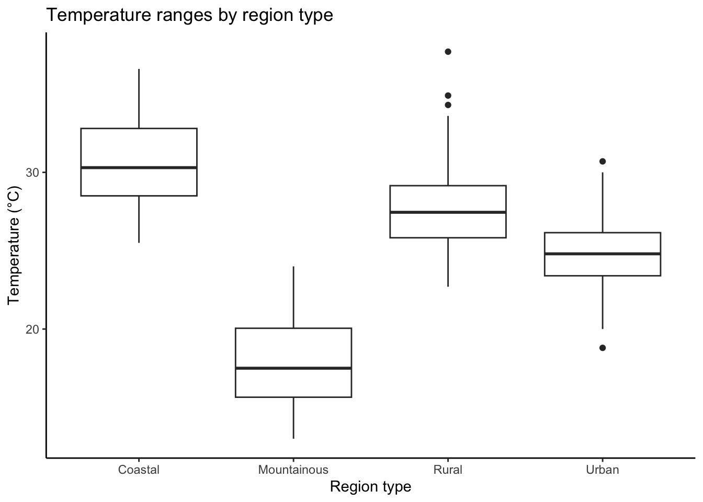
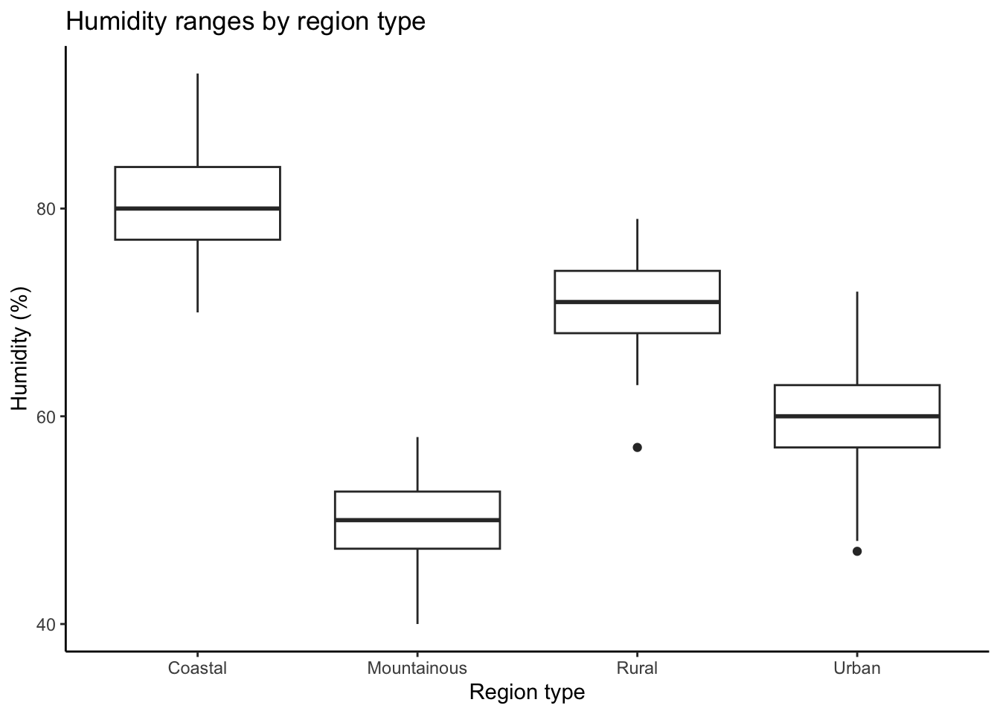
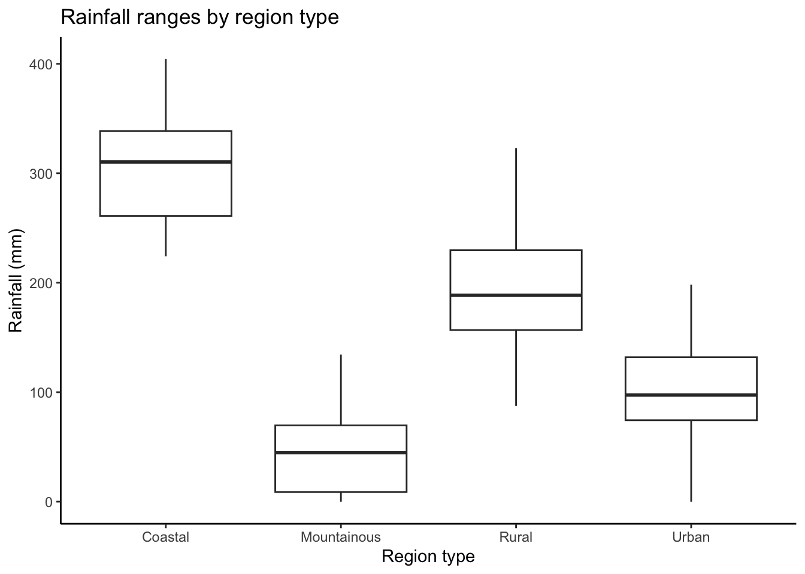

For this exercise, I will write code to create a synthetic data set describing regional case rates of vector-borne disease as well as data on the climate of each reported region and then do an initial exploratory analysis on that data.
#Load required packageslibrary(dplyr)
Attaching package: 'dplyr'
The following objects are masked from 'package:stats':
filter, lag
The following objects are masked from 'package:base':
intersect, setdiff, setequal, union
library(purrr)library(lubridate)
Attaching package: 'lubridate'
The following objects are masked from 'package:base':
date, intersect, setdiff, union
library(ggplot2)library(here)
here() starts at /Users/cgnorris/Documents/GitHub/MADA (EPID 8060E)/connornorris-MADA-portfolio
library(MASS)
Attaching package: 'MASS'
The following object is masked from 'package:dplyr':
select
library(pscl)
Classes and Methods for R originally developed in the
Political Science Computational Laboratory
Department of Political Science
Stanford University (2002-2015),
by and under the direction of Simon Jackman.
hurdle and zeroinfl functions by Achim Zeileis.
library(boot)library(psych)
Attaching package: 'psych'
The following object is masked from 'package:boot':
logit
The following objects are masked from 'package:ggplot2':
%+%, alpha
library(car)
Loading required package: carData
Attaching package: 'car'
The following object is masked from 'package:psych':
logit
The following object is masked from 'package:boot':
logit
The following object is masked from 'package:purrr':
some
The following object is masked from 'package:dplyr':
recode
#Set seed for reproducibilityset.seed(123)#Set the number of observations to generaten_regions <-200
Generating Data
#Create an empty data frameregion_data <-data.frame(RegionID =numeric(n_regions),Type =factor(character(n_regions), 4),Temperature =numeric(n_regions),Humidity =numeric(n_regions),Rainfall =numeric(n_regions),Mosquito_Density =integer(n_regions),Sanitation_Quality =factor(numeric(n_regions), 5, ordered =TRUE),Population_Density =integer(n_regions),Access_Clean_Water =factor(character(n_regions), 2),Vector_Borne_Cases =integer(n_regions))#Fill each variable#Variable 1: Region IDregion_data$RegionID <-1:n_regions#Variable 2: Type (factor with four levels)region_data$Type <-sample(c("Coastal", "Urban", "Rural", "Mountainous"), n_regions, replace =TRUE)#Climate-based variables (3-5): vary by region type#Variable 3: Temperature (numeric, degrees Celcius)region_data$Temperature <-round(rnorm(n_regions, mean =ifelse(region_data$Type =="Coastal", 30, ifelse(region_data$Type =="Urban", 25,ifelse(region_data$Type =="Rural", 28, 18))),sd =3), 1)#Variable 4: Humidity (numeric, percentage)region_data$Humidity <-round(rnorm(n_regions, mean =ifelse(region_data$Type =="Coastal", 80,ifelse(region_data$Type =="Urban", 60,ifelse(region_data$Type =="Rural", 70, 50))),sd =5), 0)#Variable 5: Rainfall (numeric, mm)region_data$Rainfall <-round(rnorm(n_regions,mean =ifelse(region_data$Type =="Coastal", 300,ifelse(region_data$Type =="Urban", 100,ifelse(region_data$Type =="Rural", 200, 50))),sd =50), 1) %>%pmax(0, region_data$Rainfall) #No negatives#Variable 6: Mosquito Population Density (integer)#Increases with temperature, humidity, and rainfallregion_data$Mosquito_Density <-round(500+50* (region_data$Temperature -15) +20* (region_data$Humidity -40) +0.5* region_data$Rainfall +rnorm(n_regions, mean =0, sd =5000)) %>%pmax(0, region_data$Mosquito_Density) #No negatives#Variable 7: Sanitation Quality (ordered factor 1-5, 1 is worst quality)#Slightly higher in urban areasregion_data$Sanitation_Quality <-ifelse(region_data$Type =="Urban",sample(2:5, n_regions, replace = T, prob =c(0.05, 0.3, 0.4, 0.25)),sample(1:4, n_regions, replace = T,prob =c(0.2, 0.3, 0.3, 0.2)))#Variable 8: Population Density (integer)#Higher in urban areasregion_data$Population_Density <-round(rnorm(n_regions,mean =ifelse(region_data$Type =="Urban", 5000,ifelse(region_data$Type =="Coastal", 2000,ifelse(region_data$Type =="Rural", 500, 300))),sd =800), 0) %>%pmax(50, region_data$Population_Density)#Variable 9: Access to Clean Water (yes/no)#Higher in urban/coastal areasregion_data$Access_Clean_Water <-ifelse(region_data$Type =="Urban"| region_data$Type =="Coastal",sample(c("Yes", "No"), n_regions, replace = T,prob =c(0.9, 0.1)),sample(c("Yes", "No"), n_regions, replace = T,prob =c(0.7, 0.3)))#Variable 10: Vector-Borne Disease Counts#Increases with mosquito density, humidity, and temperatureregion_data$Vector_Borne_Cases <-round(0.01* region_data$Mosquito_Density +2.5* region_data$Temperature +1.5* region_data$Humidity +0.05* region_data$Population_Density +rnorm(n_regions, mean =0, sd =25)) %>%pmax(0, region_data$Vector_Borne_Cases) #No negative cases
Exploring the Data
#Determine the type of object that the data isclass(region_data)
[1] "data.frame"
#Get an overview of data structurestr(region_data)
RegionID Type Temperature Humidity
Min. : 1.00 Length:200 Min. :13.00 Min. :40.00
1st Qu.: 50.75 Class :character 1st Qu.:22.68 1st Qu.:56.00
Median :100.50 Mode :character Median :25.95 Median :65.50
Mean :100.50 Mean :25.55 Mean :65.49
3rd Qu.:150.25 3rd Qu.:28.90 3rd Qu.:75.00
Max. :200.00 Max. :37.70 Max. :93.00
Rainfall Mosquito_Density Sanitation_Quality Population_Density
Min. : 0.0 Min. : 0 Min. :1.00 Min. : 50.0
1st Qu.: 78.5 1st Qu.: 0 1st Qu.:2.00 1st Qu.: 404.5
Median :147.5 Median : 2330 Median :3.00 Median :1402.5
Mean :160.1 Mean : 3304 Mean :2.86 Mean :2109.2
3rd Qu.:242.2 3rd Qu.: 5382 3rd Qu.:4.00 3rd Qu.:3786.0
Max. :404.3 Max. :15409 Max. :5.00 Max. :6940.0
Access_Clean_Water Vector_Borne_Cases
Length:200 Min. : 77.0
Class :character 1st Qu.:208.0
Mode :character Median :299.5
Mean :302.2
3rd Qu.:397.5
Max. :547.0
The code above created a data frame with 200 observations with 10 variables. The first variable assigns a unique identifier to each region represented in the dataset. The second variable is a character factor with four levels that describes the type of region listed: coastal, urban, rural, or mountainous. The next three variables are all climate based, describing the average temperature, humidity, and rainfall in each region. The sixth and eighth variables describe the population densities of mosquitoes and people in each region, respectively. The seventh variable is an ordered five-level factor describing the sanitation infrastructure quality of each region, with ‘1’ indicating the poorest quality and ‘5’ indicating the highest quality. The ninth variable is a dichotomous variable indicating whether or not those in the region have access to clean water. The tenth variable indicates the number of vector-borne disease cases in each region.
Plotting
The following is a scatterplot matrix showing the relationships between the numerical variables in this dataset.
The following are boxplots comparing the relationships between the type of region and climate-related varaibles.
#Temperature by region typeggplot(data = region_data, aes(x = Type, y = Temperature)) +geom_boxplot() +labs(title ="Temperature ranges by region type",x ="Region type",y ="Temperature (°C)") +theme_classic()

#Humidity by region typeggplot(data = region_data, aes(x = Type, y = Humidity)) +geom_boxplot() +labs(title ="Humidity ranges by region type",x ="Region type",y ="Humidity (%)") +theme_classic()

#Rainfall by region typeggplot(data = region_data, aes(x = Type, y = Rainfall)) +geom_boxplot() +labs(title ="Rainfall ranges by region type",x ="Region type",y ="Rainfall (mm)") +theme_classic()

Modeling Case Counts
Since this data depicts count data, Poisson regression or other similar models should be used.
attach(region_data)#Check for overdispersion of datamean(Vector_Borne_Cases) -var(Vector_Borne_Cases)
[1] -12171.47
#Poisson model for vector-borne caseslm1 <-glm(Vector_Borne_Cases ~ Temperature + Humidity + Rainfall + Sanitation_Quality + Mosquito_Density + Population_Density + Access_Clean_Water, family ="poisson")summary(lm1)
Call:
glm(formula = Vector_Borne_Cases ~ Temperature + Humidity + Rainfall +
Sanitation_Quality + Mosquito_Density + Population_Density +
Access_Clean_Water, family = "poisson")
Coefficients:
Estimate Std. Error z value Pr(>|z|)
(Intercept) 4.540e+00 3.639e-02 124.763 < 2e-16 ***
Temperature 5.550e-03 1.291e-03 4.301 1.7e-05 ***
Humidity 7.450e-03 6.152e-04 12.110 < 2e-16 ***
Rainfall 1.679e-04 6.855e-05 2.450 0.0143 *
Sanitation_Quality -2.269e-03 4.047e-03 -0.561 0.5750
Mosquito_Density 3.235e-05 1.079e-06 29.987 < 2e-16 ***
Population_Density 1.667e-04 2.434e-06 68.490 < 2e-16 ***
Access_Clean_WaterYes -4.602e-03 1.091e-02 -0.422 0.6731
---
Signif. codes: 0 '***' 0.001 '**' 0.01 '*' 0.05 '.' 0.1 ' ' 1
(Dispersion parameter for poisson family taken to be 1)
Null deviance: 8510.47 on 199 degrees of freedom
Residual deviance: 676.41 on 192 degrees of freedom
AIC: 2186.9
Number of Fisher Scoring iterations: 4
The variance of the vector-borne cases being greater than the mean of the vector-borne cases indicates that this data is overdispersed. In addition, certain variables in the Poisson model are significant even though there is not much biological rational for them to be significant. For example, I would expect access to clean water to only have much of an impact on waterborne disease cases, but it is significant in the Poisson model for vector-borne disease cases. Switching to a negative binomial model should better account for the problems present in the Poisson model.
#Fit a negative binomial model for vector-borne disease countslm2 <-glm.nb(Vector_Borne_Cases ~ Type + Temperature + Humidity + Rainfall + Sanitation_Quality + Mosquito_Density + Population_Density + Access_Clean_Water)summary(lm2)
Call:
glm.nb(formula = Vector_Borne_Cases ~ Type + Temperature + Humidity +
Rainfall + Sanitation_Quality + Mosquito_Density + Population_Density +
Access_Clean_Water, init.theta = 113.5405425, link = log)
Coefficients:
Estimate Std. Error z value Pr(>|z|)
(Intercept) 4.482e+00 1.627e-01 27.554 < 2e-16 ***
TypeMountainous 4.602e-04 7.946e-02 0.006 0.9954
TypeRural 8.749e-04 3.608e-02 0.024 0.9807
TypeUrban 4.903e-02 6.962e-02 0.704 0.4812
Temperature 5.971e-03 2.783e-03 2.146 0.0319 *
Humidity 7.906e-03 1.582e-03 4.999 5.77e-07 ***
Rainfall 2.280e-04 1.688e-04 1.351 0.1767
Sanitation_Quality -6.026e-03 8.151e-03 -0.739 0.4597
Mosquito_Density 3.552e-05 2.206e-06 16.100 < 2e-16 ***
Population_Density 1.636e-04 1.165e-05 14.045 < 2e-16 ***
Access_Clean_WaterYes -6.934e-03 2.027e-02 -0.342 0.7323
---
Signif. codes: 0 '***' 0.001 '**' 0.01 '*' 0.05 '.' 0.1 ' ' 1
(Dispersion parameter for Negative Binomial(113.5405) family taken to be 1)
Null deviance: 2452.26 on 199 degrees of freedom
Residual deviance: 216.25 on 189 degrees of freedom
AIC: 1986.9
Number of Fisher Scoring iterations: 1
Theta: 113.5
Std. Err.: 17.2
2 x log-likelihood: -1962.887
#Stepwise removal of non-significant termsstep(lm2, direction ="backward")
Call: glm.nb(formula = Vector_Borne_Cases ~ Temperature + Humidity +
Rainfall + Mosquito_Density + Population_Density, init.theta = 112.0723353,
link = log)
Coefficients:
(Intercept) Temperature Humidity Rainfall
4.471e+00 6.247e-03 7.684e-03 1.893e-04
Mosquito_Density Population_Density
3.551e-05 1.709e-04
Degrees of Freedom: 199 Total (i.e. Null); 194 Residual
Null Deviance: 2430
Residual Deviance: 215.7 AIC: 1978
#Final model for vector-borne casesvector_model <-glm.nb(Vector_Borne_Cases ~ Temperature + Humidity + Mosquito_Density + Population_Density)summary(vector_model)
Call:
glm.nb(formula = Vector_Borne_Cases ~ Temperature + Humidity +
Mosquito_Density + Population_Density, init.theta = 110.2600906,
link = log)
Coefficients:
Estimate Std. Error z value Pr(>|z|)
(Intercept) 4.415e+00 4.785e-02 92.266 < 2e-16 ***
Temperature 7.467e-03 2.342e-03 3.188 0.00143 **
Humidity 8.568e-03 1.028e-03 8.331 < 2e-16 ***
Mosquito_Density 3.550e-05 2.185e-06 16.247 < 2e-16 ***
Population_Density 1.697e-04 4.075e-06 41.651 < 2e-16 ***
---
Signif. codes: 0 '***' 0.001 '**' 0.01 '*' 0.05 '.' 0.1 ' ' 1
(Dispersion parameter for Negative Binomial(110.2601) family taken to be 1)
Null deviance: 2402.03 on 199 degrees of freedom
Residual deviance: 215.39 on 195 degrees of freedom
AIC: 1978.2
Number of Fisher Scoring iterations: 1
Theta: 110.3
Std. Err.: 16.5
2 x log-likelihood: -1966.184
The AIC value of the full negative binomial model was much lower than the AIC value for the full Poisson model, indicating that the negative binomial model was a better fit. A backwards stepwise regression with this model confirmed that temperature, humidity, mosquito density, and popularion density were significant predictors in this model for this data.